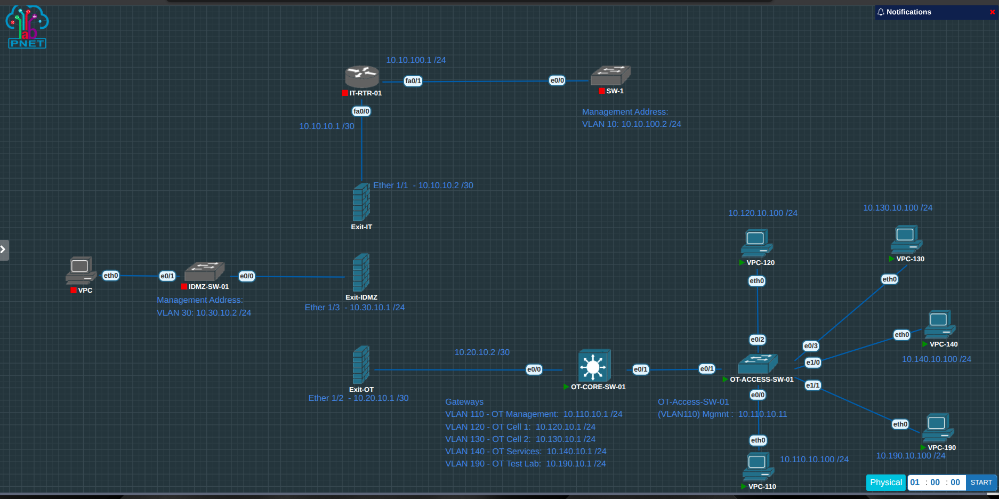

From concept to implementation
A measurable Layer 3 baseline
The earlier architecture study compared a Layer 3 core with distributed ACLs against firewall-hosted VLAN gateways. This phase implements the Layer 3 core concept in PNETLab so its behaviour can be measured before access controls are added.
OT-CORE-SW-01 owns the switched virtual interfaces for five
OT VLANs. A separate routed /30 link connects the
core to the Palo Alto OT boundary. The access switch carries
only the required VLANs over an 802.1Q trunk.
Every test endpoint can reach its gateway, the other OT test VLANs, and the Exit-OT firewall interface. This deliberate any-to-any state provides a known-good routing baseline before ACLs begin removing unnecessary paths.
Current PNETLab build
The newest OT topology

10.20.10.2/30 on a routed physical interface
toward Exit-OT at 10.20.10.1/30.
Core routing
Cisco IOL Layer 2 software provides SVIs, inter-VLAN
routing, 802.1Q trunking, and a routed
no switchport uplink.
Access switching
OT-ACCESS-SW-01 places each endpoint in its intended access VLAN and carries VLANs 110, 120, 130, 140 and 190 to the core.
Addressing and role separation
Implemented OT VLAN strategy
Predictable three-digit VLAN IDs make the OT domain easy to recognise during configuration, troubleshooting, packet capture, and later automation. VLAN 999 is reserved as an unused native and black-hole VLAN and has no Layer 3 gateway.
| VLAN | Name | Subnet / gateway | Role | Routing / enforcement |
|---|---|---|---|---|
| 110 | OT-MGMT | 10.110.10.0/2410.110.10.1 |
OT engineering, monitoring and infrastructure administration | Core SVI; restricted management policy |
| 120 | OT-CELL-1 | 10.120.10.0/2410.120.10.1 |
PLC, HMI and first simulated production cell | Core SVI; cell ACL |
| 130 | OT-CELL-2 | 10.130.10.0/2410.130.10.1 |
Second production or training cell | Core SVI; cell ACL |
| 140 | OT-SERVICES | 10.140.10.0/2410.140.10.1 |
Historian, DNS, NTP and approved shared OT services | Core SVI; service-specific ACL |
| 190 | TEST-LAB | 10.190.10.0/2410.190.10.1 |
Experiments and temporary lab devices | Core SVI; isolated by default |
| 999 | NATIVE-BLACKHOLE | None | Unused ports and trunk native VLAN | No SVI and no endpoints |
Operational evidence
Routing proved before filtering
The core-to-firewall transit uses a dedicated routed physical
interface rather than another access VLAN. OT-CORE-SW-01
Ethernet0/0 is 10.20.10.2/30; the Exit-OT
firewall interface is 10.20.10.1/30.
Validated
SVI state, VLAN membership, trunk forwarding, inter-VLAN reachability, firewall-interface reachability, and return routing were tested.
Recoverable
Device configurations were saved and exported from PNETLab as an integrity-checked startup-configuration archive before ACL work begins.
The open baseline is intentional. If a flow fails after an ACL is introduced, the change can be compared against a network that was already proven to route correctly.
A fault worth documenting
The duplicate address that looked like a routing limitation
Initial tests suggested that the virtual Layer 3 switch could
route between SVIs but not toward a routed physical port. The
routing table and system messages showed the real cause:
both ends of the transit were using
10.20.10.1.
Observed evidence
IOS reported %IP-4-DUPADDR, while the intended
diagram assigned 10.20.10.2/30 to the core.
Correcting Ethernet0/0 to that address immediately restored
the expected routed path.
The lesson is transferable: verify the local route, interface address, ARP information, and device logs before concluding that an emulated image lacks a feature.
Next control layer
Initial inter-VLAN ACL policy
OT-CORE-SW-01 remains the gateway for the five OT VLANs. Extended IPv4 ACLs will be applied inbound on the SVIs so traffic is evaluated where it enters the Layer 3 core from each source VLAN.
Cisco IOS ACLs are stateless. Required bidirectional flows, UDP replies, and server-initiated sessions must be represented deliberately. Complex stateful inspection remains at the Palo Alto boundary. Industrial application ports remain TBD until the traffic inventory proves they are required.
| Source | Destination | Approved purpose | Baseline action |
|---|---|---|---|
| VLAN 110 OT-MGMT |
OT VLANs, network devices and Exit-OT | Authorised administration, monitoring and troubleshooting | Permit approved management protocols; deny and log all other traffic |
| VLAN 120 OT-CELL-1 |
Own SVI, VLAN 140 and Exit-OT | Gateway diagnostics, required OT services and approved northbound conduits | Permit documented services only; deny VLANs 130 and 190 and all other traffic |
| VLAN 130 OT-CELL-2 |
Own SVI, VLAN 140 and Exit-OT | Gateway diagnostics, required OT services and approved northbound conduits | Permit documented services only; deny VLANs 120 and 190 and all other traffic |
| VLAN 140 OT-SERVICES |
Own SVI, VLANs 120/130 and Exit-OT | DNS, NTP, historian and approved server-initiated flows | Permit documented service flows only; deny and log all other traffic |
| VLAN 190 TEST-LAB |
Own SVI, production OT VLANs and Exit-OT | Isolated experiments and specifically approved temporary tests | Deny production access by default; allow only time-bounded exceptions |
| Any OT VLAN | Any other destination | No documented operational or engineering requirement | Deny and log |
Controlled change
How ACL enforcement will be introduced
Keep the verified PNETLab configuration archive and console access available for rollback.
Build one ACL offline and check sequence numbers, wildcard masks, permits, and the final deny/log entry.
Apply the ACL inbound to a non-management SVI and test allowed flows, blocked flows, and ACL counters.
Repeat for the remaining cell, service, and test VLANs. Apply the management ACL last to reduce lockout risk.
Acceptance criteria
Approved flows succeed; prohibited cell-to-cell and test-to-production paths fail; management remains available; ACL counters support the observed result; and no undocumented permit remains.